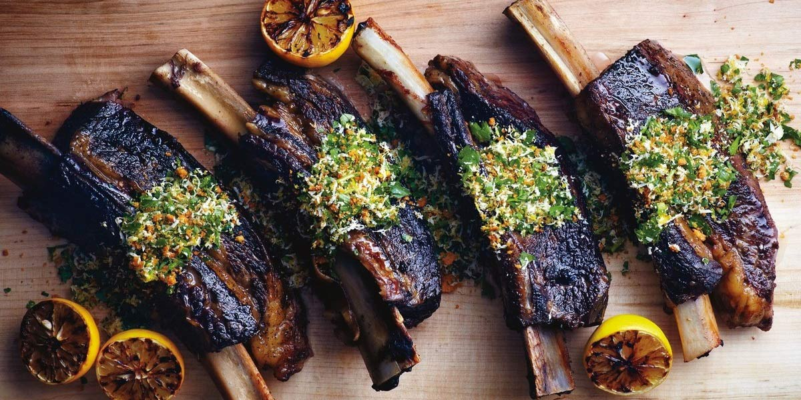

Braised Short Rib
Recipe Specification
Ingredients List
| Ingredients | Quantity |
|---|---|
| Beef Short Rib | 6x1 |
| Table Salt | ½tsp |
| Cracked Black Pepper | ½tsp |
| Vegetable Oil | 60ml |
| White Onion | 1x1 |
| Garlic Cloves | 3 Cloves |
| Beef Stock | 240ml |
| Worcestershire Sauce | 30ml |
| Rosemary | 1 sprig |
Yield: 2 portions
Preparation
- Peel and slice white onions.
- Peel and crush garlic cloves.
- Season short ribs with salt and pepper.
- Pre-heat oven to 160’C.
Cooking Instructions
- Put a medium sized cast iron pot on a medium/high heat and add 30ml of vegetable oil.
- Sear short ribs on all sides for an even brown before removing from pot
- Add sliced onion to pot and sauté for 2-3 minutes.
- Add crushed garlic and sauté for a further 2 minutes.
- Add beef stock and Worcestershire sauce before allowing to simmer.
- Return short rib to pot, add sprig of rosemary and cover with lid before placing in the oven for 2 and ½ hours.

Serving Suggestions
Short ribs go great with creamy mash potatoes.
Storing instructions
Consume on the day.